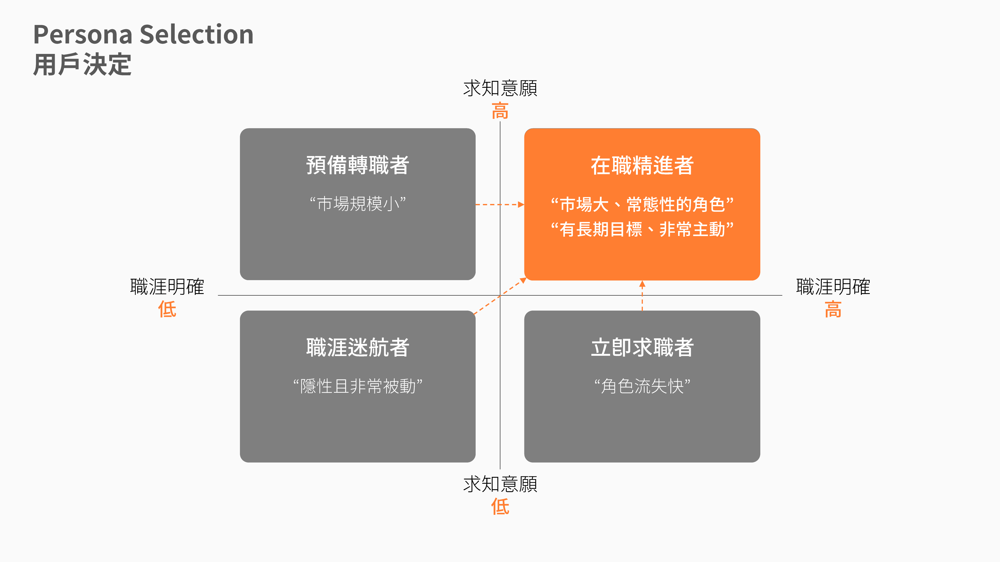
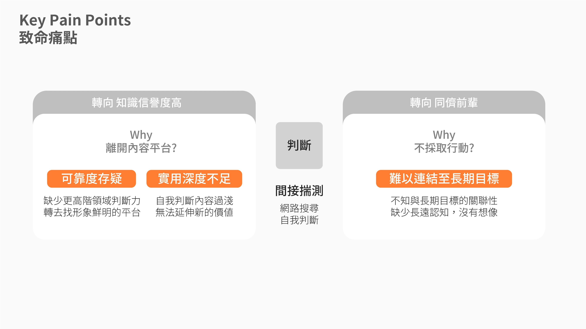
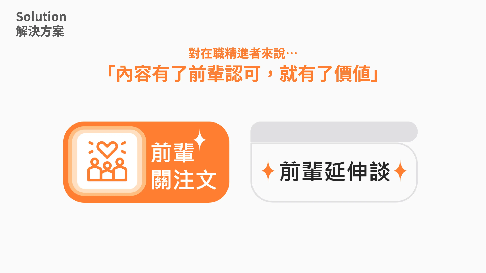
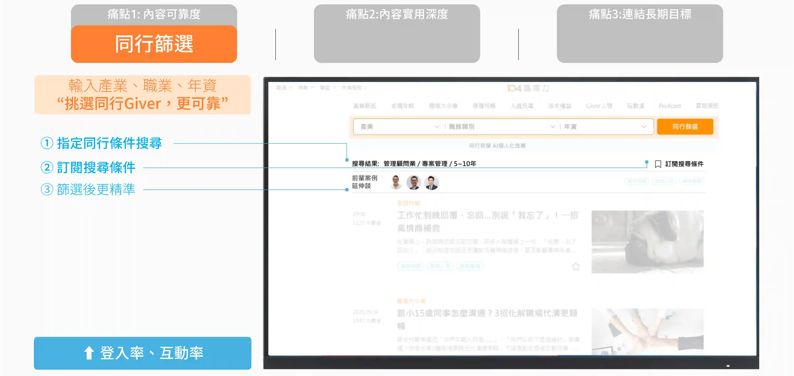
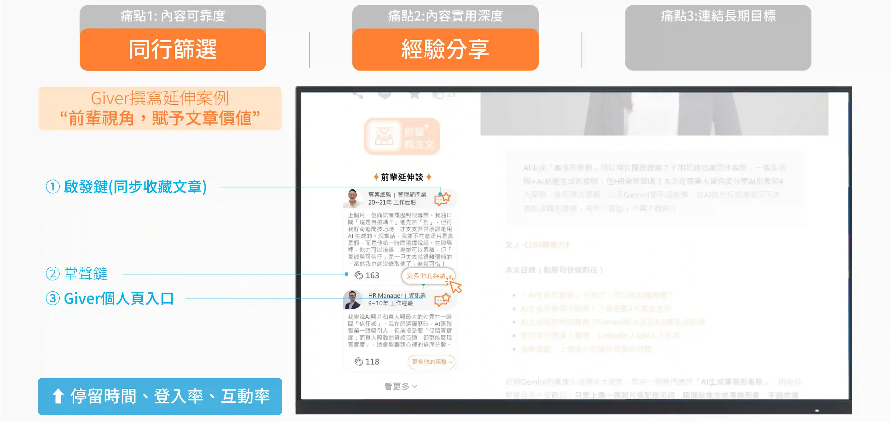
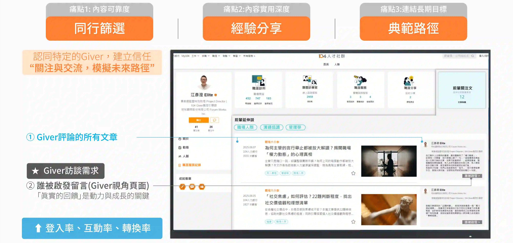
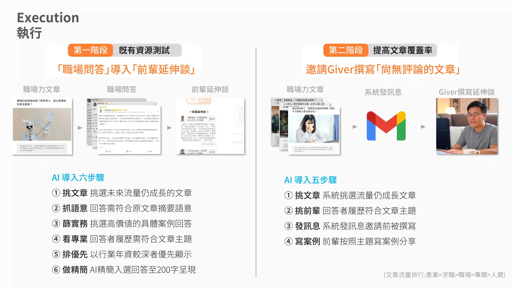
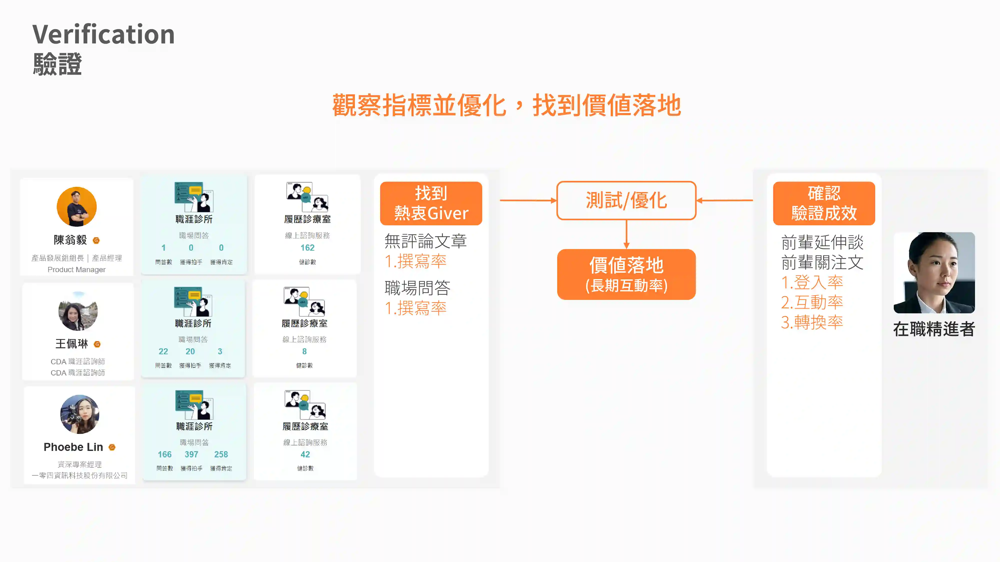
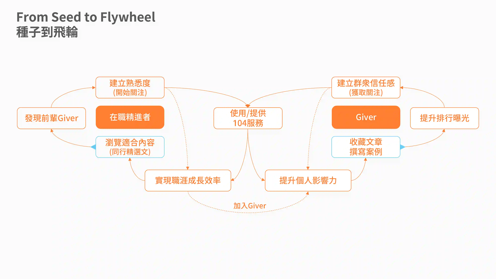
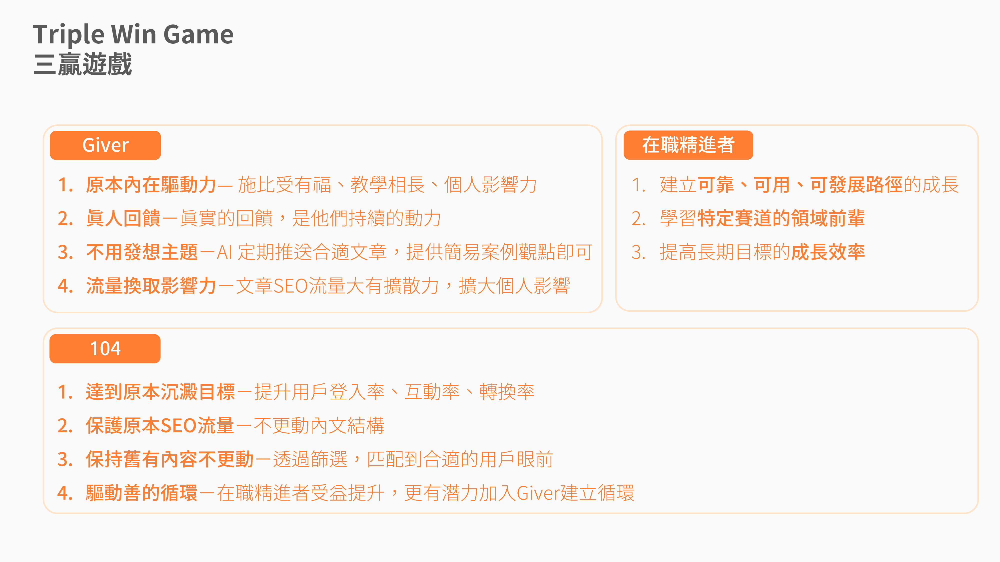

商業思維學院:104流量沉澱策略
本專案源於商業思維學院與 104 合作之產品經理學習營，題目聚焦於提升「104 職場力內容平台的登入率、互動率與轉換率三項指標」。在平台高流量與內容基礎下，統整四大用戶族群，並藉由用戶訪談洞察出「有價的內容，往往藏在前輩的口中」作為產品策略的切入點。最終發展出「前輩延伸談、前輩關注文」兩項功能，回應內容可信與長期連結性的需求，也將文章從純閱讀昇華為關係循環的成長價值。最終，本提案於 Final Pitch 中獲選為 MVP，完成策略假設的初步驗證。
平台處境/
104職場力平台累積了大量與職涯相關內容，也帶來大量穩定的流量，作為產品經理的目標任務是提升「內容流量沉澱的策略」與「可能的驗證方向」。


用戶族群與行為分析/
我們以「職涯明確度」和「求知意願」，這兩個會影響「行為基準」來做矩陣，最終選擇在職精進者，因為市場更大，也是常態性的角色，最重要的是 「其他角色最終也會變成在職精進者」；在拆解用戶行為路徑上我們發現「判斷階段」在整個漏斗上扮演了非常大的決策影響力。


痛點與解決方案/
判斷階段正巧打中了用戶的三大致命痛點，「內容實用深度不足」和「可靠度存疑」以及「難以連結長期目標」，最終皆導致目標用戶轉往信譽度高的知識平台或同儕前輩學習，而我們認為「有價的內容往往藏在前輩口中」，因此內容要有前輩認可，才會有了價值。





執行與驗證方式/
盤點現有資源，現有的職場問答可以經過簡易的AI處理後導入文章，成為第一階段效果測試方法；而在無法取得匹配的文章中，則進行內容與前輩背景的資料比對，邀請撰寫來提高文章品質。最後在驗證指標上，我們以撰寫率作為前輩方指標，登入互動與轉化率則做為目標用戶指標，確定是否達到長期落底可能。


利害關係人/
該方案最重要的是利害關係人的意願性，初期能否滾動成為關鍵。我們在思考的過程中，特別注重前輩與平台方投入的阻力，因此借助現有資源的力量，先提供成果，再提供簡易流程，確保三者之間的彼此連動得到驗證。
1%的支點/
用戶訪談能快速地攤開一個人的決策路徑。但目標並非線性搜尋，或期待一擊斃命，而是逐步堆疊一個空間，一個屬於用戶的思考模型。在這個空間裡，假設如同手電筒，盡可能找出那 1% 的關鍵角落，並加以驗證。